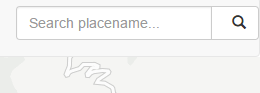
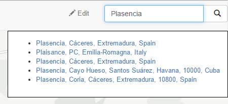
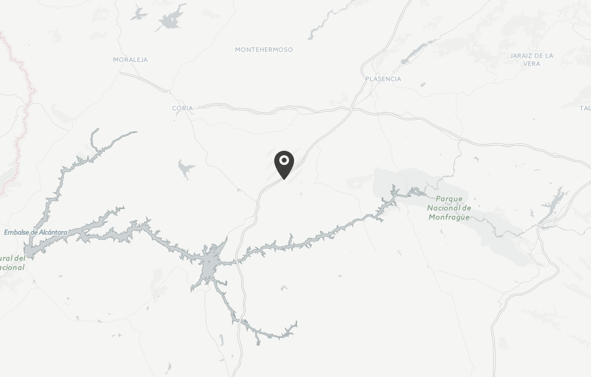

The geocoding tools allows to search places by name and find them in the map.
To use it, enter the name to search in the search box and press Enter or click on the search button
.
A list of names containing the search text will be shown as links below the search box.
Click on a link to see the corresponding place in the map. The map wil be moved to the coordinates of the points, and a marker will be added to indicate its position.
